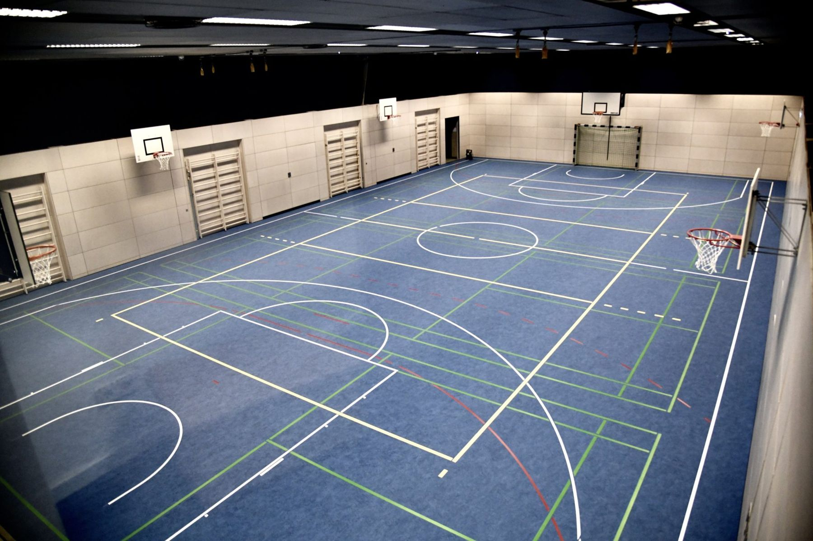
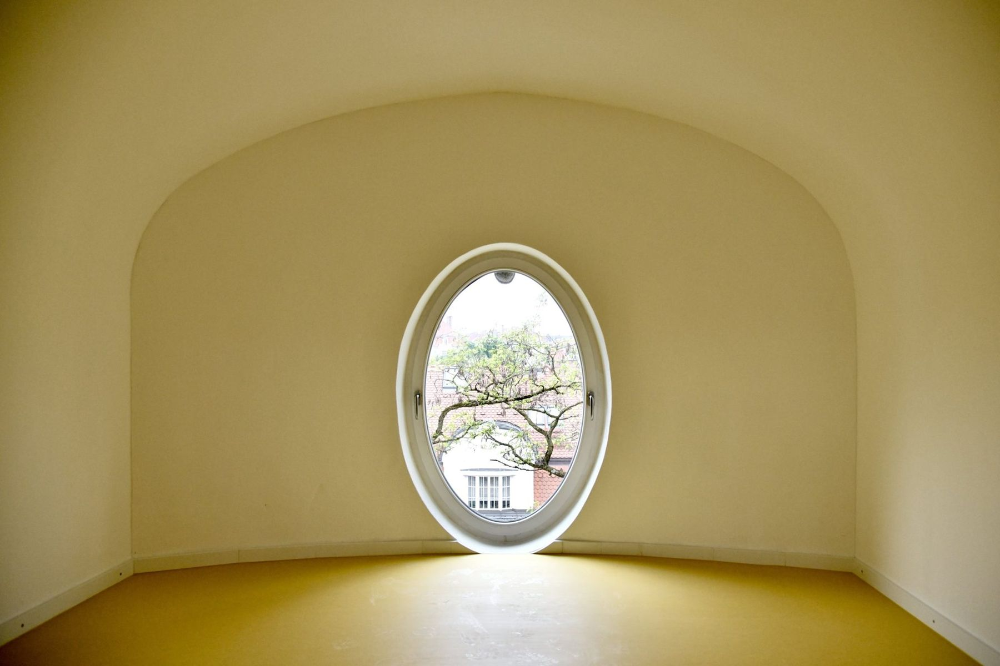

Unterricht und Projekte
[Beispiele, z. B. Ausstattung für Kunst, Musik, Naturwissenschaften]

Seit 1991 für das OvMG
Eltern, Lehrkräfte, Ehemalige und Freunde der Schule: Mit Beiträgen und Spenden ermöglichen wir, was im Schulalltag sonst nicht möglich wäre.

Förderverein des früheren Alten Realgymnasiums, heute Oskar-von-Miller-Gymnasium. Gemeinnützig anerkannt.
Satzung lesenWillkommen ist, wer sich der Schule verbunden fühlt – ab 10 € im Jahr.
Zur MitgliedschaftJede Spende kommt der Schule zugute – auf Wunsch für ein bestimmtes Projekt.
Zum SpendenkontoDas Haus
Das Stammgebäude an der Siegfriedstraße wurde am 18. September 1912 eingeweiht. Nach der Generalsanierung [Jahr] zeigt es sich hell und offen – und ist doch unverkennbar dasselbe Haus.
Am Torbogen unter der Wölfin
„Pflege der Jugend schafft rüstiges Alter.“
Der alte Spruch am Schulgebäude beschreibt ziemlich genau, worum es uns geht: in die Schülerinnen und Schüler von heute zu investieren.
Was wir fördern
Drei Bereiche als Gliederung – die konkreten Beispiele ergänzt der Vorstand.
[Beispiele, z. B. Ausstattung für Kunst, Musik, Naturwissenschaften]

[Beispiele, z. B. Konzerte, Wettbewerbe, Feste]

[falls zutreffend, z. B. Zuschüsse für Fahrten]
Eine Idee, die Unterstützung braucht? Lehrkräfte und Klassen können sich mit ihrem Vorhaben an den Vorstand wenden.
Vorstand kontaktierenMitglied werden
Spenden
Freunde des OvMG e.V.
c/o Oskar-von-Miller-Gymnasium
Siegfriedstraße 22
80803 München